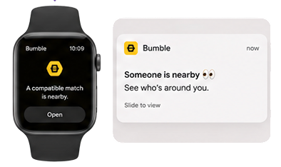
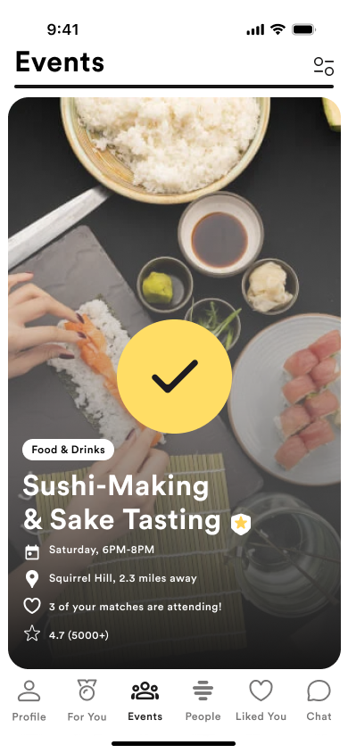
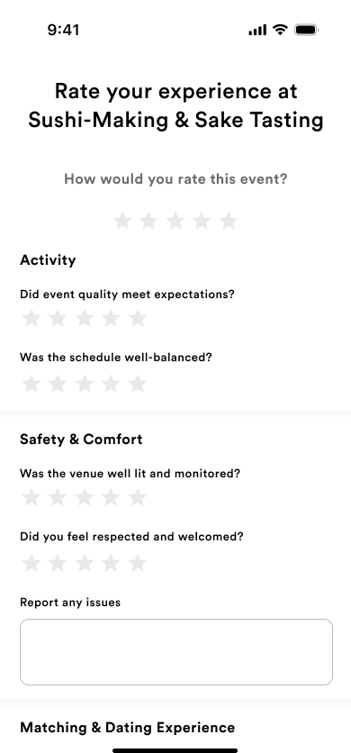
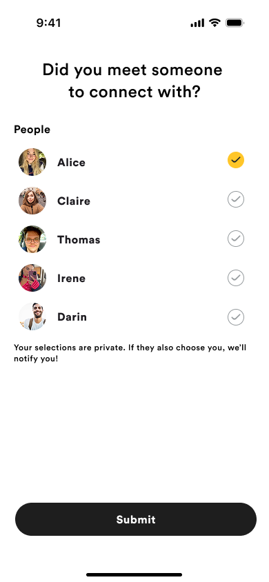
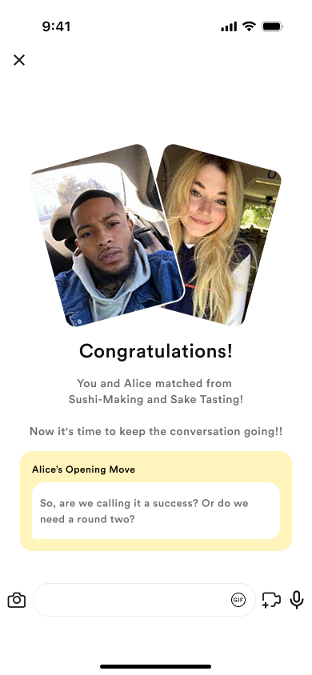

Meet through moments,
not just matches.
A group activity-based Bumble experience that helps users move from digital matching to safer, more natural in-person connection.
A group activity-based Bumble experience that helps users move from digital matching to safer, more natural in-person connection.
I was given a brief to explore how precision location could drive premium growth — but research revealed the real barrier wasn't visibility. It was motivation, safety, and social comfort.
Use precise location to notify users when a compatible match was physically nearby across mobile, desktop, and Apple Watch (within 0.5 km).
"If users knew a match was nearby, they would be more likely to engage — and ultimately convert to premium."
Usage declined after initial curiosity. Awareness didn't translate into action.
Users had no clear reason to act. "Why now? Is this the right moment?"
Real-time visibility felt vulnerable in dating contexts.
"The bigger issue was not distance. It was motivation, safety, and social comfort."
Nearby match alerts created awareness, but not enough motivation to act.
Initial curiosity did not translate into sustained interaction. Awareness of a nearby match did not drive repeated behavior.
Map integration consistently outperformed proximity alerts across CTR, interaction rate, conversion, and retention. Users responded more positively when interaction was tied to contextual information.
Secondary research on location-sharing behavior suggested users were more hesitant when interaction felt overly exposed or lacking social context.
Barkhuus et al., 2015 · Forbes Health, 2024

"Someone is nearby"

"Here's a shared reason to connect"
Users spend significant time in low-value messaging before determining compatibility.
↓Shared activity cards help users assess compatibility through real-world context instead of prolonged conversation.
Real-time location visibility increased feelings of vulnerability.
↓Structured public events and visibility controls create a safer and more comfortable meetup environment.
Users engaged more when interaction occurred within shared context rather than passive proximity.
↓Mutual event participation creates a more intentional and natural path toward meeting.
Meeting became a gradual shared experience — not a high-pressure decision.
Every step reduces pressure and builds comfort, making meeting feel natural and intentional.
Premium users receive AI-curated event recommendations based on their interests, past event behavior, attendee compatibility, and optional external signals like Spotify or Goodreads. Instead of showing nearby events only, Bumble IRL helps users understand why an event is personally and socially relevant before they commit.
I built a component system for activity cards, invite prompts, safety indicators, visibility controls, and post-event connection states — balancing Bumble's playful identity with clarity, trust, and user control.

After participating in an event, users privately select who they want to reconnect with through a 'Tap to Connect' interaction. Only mutual interest opens a private conversation, shifting the foundation of matching from profile-first attraction to shared real-world experience.



"The experience remains valuable even without a romantic match.
You still enjoy the event, make memories, and leave with meaningful social value."
The original direction focused on making nearby matches more visible through precision location. But through research, I found that visibility alone did not create meaningful interaction.
The deeper problem was emotional hesitation: users needed safety, context, and a more natural reason to meet. Reframing the brief around that hesitation, instead of solving it as written, shaped every design decision that followed.
The most impactful solutions often start by challenging the original problem framing
Behavioral data and user insights revealed the real barriers to connection
Emotional comfort, safety, and context drive real-world interaction